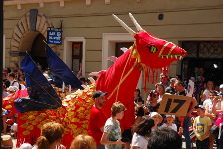

Baza smoków
| Nazwa | Długość | Szerokość |
|---|
Opisy smoków
- Smok czerwony
- Pochodzi z Chin. Ma 1000 lat. Żywi się mniejszymi zwierzętami. Posiada łuski cenne na rynkach wschodnich do wyrabiania lekarstw. Jest dziki i groźny.
- Smok czerwielkiwony
- OpPochodzi z Bułgarii. Ma 10000 lat. Żywi się mniejszymi zwierzętami, ale tylko w kolorze zielonym. Jest kosmaty. Z sierści zgubionej przez niego, tka się najdroższe materiały.
- Skrzydlaty łaciaty
- Pochodzi z Francji. Ma 100 lat. Żywi się owocami morza. Jest natchnieniem dla najlepszych malarzy. Często im pozuje. Smok ten jest przyjacielem ludzi i czasami im pomaga. Jest jednak próżny i nie lubi się przepracowywać.
Galeria
